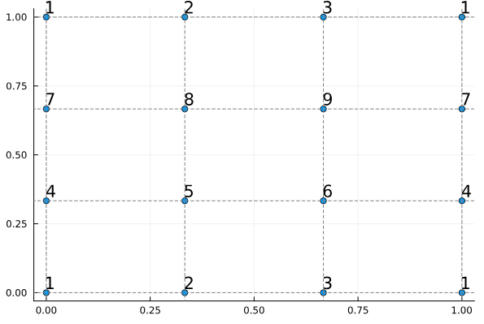

Tutorial 24: Low-level API - Geometry


In this tutorial, we will learn
- How the
DiscreteModeland its components work. - How to extract topological information from a
GridTopology. - How to extract geometrical information from a
Grid. - How periodicity is handled in Gridap, and the difference between nodes and vertices.
- How to create a periodic model from scratch, use the example of a Mobius strip.
Required Packages
using Gridap
using Gridap.Geometry, Gridap.ReferenceFEs, Gridap.Arrays
using PlotsTable of Contents
- Utility Functions
- The DiscreteModel Structure
- Working with Topology
- Geometric Mappings
- High-order Grids
- Periodicity in Gridap
1. Utility Functions
We begin by defining helper functions that will be essential throughout this tutorial. These functions help us visualize and work with our mesh structures.
Convert a CartesianDiscreteModel to an UnstructuredDiscreteModel for more generic handling
function cartesian_model(args...; kwargs...)
UnstructuredDiscreteModel(CartesianDiscreteModel(args...; kwargs...))
endVisualization function to plot nodes with their IDs Input: nodecoords - Array of node coordinates nodeids - Array of corresponding node IDs
function plot_node_numbering(node_coords, node_ids)
x = map(c -> c[1], node_coords)
y = map(c -> c[2], node_coords)
a = text.(node_ids, halign=:left, valign=:bottom)
scatter(x, y, series_annotations = a, legend=false)
hline!(unique(x), linestyle=:dash, color=:grey)
vline!(unique(y), linestyle=:dash, color=:grey)
endOverloaded method to plot node numbering directly from a model This function extracts the necessary information from the model and calls the base plotting function
function plot_node_numbering(model)
D = num_cell_dims(model)
topo = get_grid_topology(model)
node_coords = Geometry.get_node_coordinates(model)
cell_node_ids = get_cell_node_ids(model)
cell_vertex_ids = Geometry.get_faces(topo, D, 0)
node_to_vertex = zeros(Int, length(node_coords))
for (nodes,vertices) in zip(cell_node_ids, cell_vertex_ids)
node_to_vertex[nodes] .= vertices
end
plot_node_numbering(node_coords, node_to_vertex)
end2. The DiscreteModel Structure
The DiscreteModel in Gridap is a fundamental structure that represents a discretized computational domain. It consists of three main components, each serving a specific purpose:
The
GridTopology: Defines the connectivity of the mesh elements- Stores how vertices, edges, faces, and cells are connected
- Enables neighbor queries and traversal of the mesh
- Pure topological information, no geometric data
The
Grid: Contains the geometric information of the mesh- Stores coordinates of mesh nodes
- Provides mappings between reference and physical elements
- Handles curved elements and high-order geometries
The
FaceLabeling: Manages mesh labels and markers- Identifies boundary regions
- Tags different material regions
- Essential for applying boundary conditions
Key Concept: Nodes vs. Vertices
One of the most important distinctions in Gridap is between nodes and vertices:
Vertices (Topological entities):
- 0-dimensional entities in the
GridTopology - Define the connectivity of the mesh
- Used for neighbor queries and mesh traversal
- Number of vertices depends only on topology
- 0-dimensional entities in the
Nodes (Geometric entities):
- Control points stored in the
Grid - Define the geometry of elements
- Used for interpolation and mapping
- Number of nodes depends on the geometric order
- Control points stored in the
While nodes and vertices often coincide in simple meshes, they differ in two important cases:
- Periodic meshes: Where multiple nodes may correspond to the same vertex
- High-order meshes: Where additional nodes are needed to represent curved geometries
3. Working with Topology
Let's explore how to extract and work with topological information. We'll start by creating a simple 3x3 cartesian mesh:
model = cartesian_model((0,1,0,1),(3,3))First, let's get the topology component and count the mesh entities:
topo = get_grid_topology(model)
n_vertices = num_faces(topo,0) # Number of vertices (0-dimensional entities)
n_edges = num_faces(topo,1) # Number of edges (1-dimensional entities)
n_cells = num_faces(topo,2) # Number of cells (2-dimensional entities)Connectivity Queries
Gridap provides various methods to query the connectivity between different mesh entities. Here are some common queries:
Get vertices of each cell (cell → vertex connectivity)
cell_to_vertices = get_faces(topo,2,0)Get edges of each cell (cell → edge connectivity)
cell_to_edges = get_faces(topo,2,1)Get cells adjacent to each edge (edge → cell connectivity)
edge_to_cells = get_faces(topo,1,2)Get vertices of each edge (edge → vertex connectivity)
edge_to_vertices = get_faces(topo,1,0)Advanced Connectivity: Finding Cell Neighbors
Finding cells that share entities (like vertices or edges) requires more work. A direct query for cell-to-cell connectivity returns an identity map:
cell_to_cells = get_faces(topo,2,2) # Returns identity tableTo find actual cell neighbors, we need to traverse through lower-dimensional entities. Here's a utility function that builds a face-to-face connectivity graph:
function get_face_to_face_graph(topo,Df)
n_faces = num_faces(topo,Df)
face_to_vertices = get_faces(topo,Df,0) # Get vertices of each face
vertex_to_faces = get_faces(topo,0,Df) # Get faces incident to each vertex
face_to_face = Vector{Vector{Int}}(undef,n_faces)
for face in 1:n_faces
nbors = Int[]
for vertex in face_to_vertices[face]
append!(nbors,vertex_to_faces[vertex]) # Add incident faces
end
face_to_face[face] = filter(!isequal(face),unique(nbors)) # Remove self-reference and duplicates
end
return face_to_face
endNow we can find neighboring cells and edges:
cell_to_cells = get_face_to_face_graph(topo,2) # Cells sharing vertices
edge_to_edges = get_face_to_face_graph(topo,1) # Edges sharing vertices4. Geometric Mappings
The geometry of our mesh is defined by mappings from reference elements to physical space. Let's explore how these mappings work in Gridap:
grid = get_grid(model)First, we extract the basic geometric information:
cell_map = get_cell_map(grid) # Mapping from reference to physical space
cell_to_nodes = get_cell_node_ids(grid) # Node IDs for each cell
node_coordinates = get_node_coordinates(grid) # Physical coordinates of nodesComputing Cell-wise Node Coordinates
There are two ways to get the coordinates of nodes for each cell:
- Using standard Julia mapping:
cell_to_node_coords = map(nodes -> node_coordinates[nodes], cell_to_nodes)- Using Gridap's lazy evaluation system (more efficient for large meshes):
cell_to_node_coords = lazy_map(Broadcasting(Reindex(node_coordinates)),cell_to_nodes)Geometric Mappings
The mapping from reference to physical space is defined by cell-wise linear combination of:
- Reference element shape functions (basis)
- Physical node coordinates (coefficients)
cell_reffes = get_cell_reffe(grid) # Get reference elements for each cell
cell_basis = lazy_map(get_shapefuns,cell_reffes) # Get basis functions
cell_map = lazy_map(linear_combination,cell_to_node_coords,cell_basis)5. High-order Grids
High-order geometric representations are essential for accurately modeling curved boundaries and complex geometries. Let's explore this by creating a curved mesh:
Example: Creating a Half-Cylinder
First, we define a mapping that transforms our planar mesh into a half-cylinder:
function F(x)
θ = x[1]*pi # Map x-coordinate to angle [0,π]
z = x[2] # Keep y-coordinate as height
VectorValue(cos(θ),sin(θ),z) # Convert to cylindrical coordinates
endApply the mapping to our node coordinates:
new_node_coordinates = map(F,node_coordinates)Create new cell mappings with the transformed coordinates:
new_cell_to_node_coords = lazy_map(Broadcasting(Reindex(new_node_coordinates)),cell_to_nodes)
new_cell_map = lazy_map(linear_combination,new_cell_to_node_coords,cell_basis)Create a new grid with the transformed geometry:
reffes, cell_types = compress_cell_data(cell_reffes)
new_grid = UnstructuredGrid(new_node_coordinates,cell_to_nodes,reffes,cell_types)Save for visualization:
writevtk(new_grid,"half_cylinder_linear")If we visualize the result, we'll notice that despite applying a curved mapping, our half-cylinder looks faceted. This is because we're still using linear elements (straight edges) to approximate the curved geometry.
Solution: High-order Elements
To accurately represent curved geometries, we need high-order elements:
Create quadratic reference elements:
order = 2 # Polynomial order
new_reffes = [LagrangianRefFE(Float64,QUAD,order)] # Quadratic quadrilateral elements
new_cell_reffes = expand_cell_data(new_reffes,cell_types)Create a finite element space to handle the high-order geometry:
space = FESpace(model,new_cell_reffes)
new_cell_to_nodes = get_cell_dof_ids(space)Get the quadratic nodes in the reference element:
cell_dofs = lazy_map(get_dof_basis,new_cell_reffes)
cell_basis = lazy_map(get_shapefuns,new_cell_reffes)
cell_to_ref_coordinates = lazy_map(get_nodes,cell_dofs)Map the reference nodes to the physical space:
cell_to_phys_coordinates = lazy_map(evaluate,cell_map,cell_to_ref_coordinates)Create the high-order node coordinates:
new_n_nodes = maximum(maximum,new_cell_to_nodes)
new_node_coordinates = zeros(VectorValue{2,Float64},new_n_nodes)
for (cell,nodes) in enumerate(new_cell_to_nodes)
for (i,node) in enumerate(nodes)
new_node_coordinates[node] = cell_to_phys_coordinates[cell][i]
end
endApply our cylindrical mapping to the high-order nodes:
new_node_coordinates = map(F,new_node_coordinates)Create the high-order grid:
new_grid = UnstructuredGrid(new_node_coordinates,new_cell_to_nodes,new_reffes,cell_types)
writevtk(new_grid,"half_cylinder_quadratic")The resulting mesh now accurately represents the curved geometry of the half-cylinder, with quadratic elements properly capturing the curvature (despite paraview still showing a linear interpolation between the nodes).
6. Periodicity in Gridap
Periodic boundary conditions are essential in many applications, such as:
- Modeling crystalline materials
- Simulating fluid flow in periodic domains
- Analyzing electromagnetic wave propagation
Gridap handles periodicity through a clever approach:
- In the topology: Periodic vertices are "glued" together, creating a single topological entity
- In the geometry: The corresponding nodes maintain their distinct physical positions
This separation between topology and geometry allows us to:
- Maintain the correct geometric representation
- Automatically enforce periodic boundary conditions
- Avoid mesh distortion at periodic boundaries
Visualizing Periodicity
Let's examine how periodicity affects the mesh structure through three examples:
- Standard non-periodic mesh:
model = cartesian_model((0,1,0,1),(3,3))
plot_node_numbering(model)
- Mesh with periodicity in x-direction:
model = cartesian_model((0,1,0,1),(3,3),isperiodic=(true,false))
plot_node_numbering(model)
- Mesh with periodicity in both directions:
model = cartesian_model((0,1,0,1),(3,3),isperiodic=(true,true))
plot_node_numbering(model)
Notice how the vertex numbers (displayed at node positions) show the topological connectivity, while the nodes remain at their physical positions.
Creating a Möbius Strip
We'll create it by:
- Starting with a rectangular mesh
- Making it periodic in one direction
- Adding a twist before connecting the ends
Step 1: Create Base Mesh
Start with a 3x3 cartesian mesh:
nc = (3,3) # Number of cells in each direction
model = cartesian_model((0,1,0,1),nc)Extract geometric and topological information:
node_coords = get_node_coordinates(model) # Physical positions
cell_node_ids = get_cell_node_ids(model) # Node connectivity
cell_type = get_cell_type(model) # Element type
reffes = get_reffes(model) # Reference elementsStep 2: Create Periodic Topology
To create the Möbius strip, we need to:
- Identify vertices to be connected
- Reverse one edge to create the twist
- Ensure proper connectivity
Create initial vertex numbering:
np = nc .+ 1 # Number of points in each direction
mobius_ids = collect(LinearIndices(np))Create the twist by reversing the last row:
mobius_ids[end,:] = reverse(mobius_ids[1,:])Map cell nodes to the new vertex numbering:
cell_vertex_ids = map(nodes -> mobius_ids[nodes], cell_node_ids)Step 3: Clean Up Vertex Numbering
The new vertex IDs aren't contiguous (some numbers are duplicated due to periodicity). We need to create a clean mapping:
Find unique vertices and create bidirectional mappings:
vertex_to_node = unique(vcat(cell_vertex_ids...))
node_to_vertex = find_inverse_index_map(vertex_to_node)Renumber vertices to be contiguous:
cell_vertex_ids = map(nodes -> node_to_vertex[nodes], cell_vertex_ids)Convert to the Table format required by Gridap:
cell_vertex_ids = Table(cell_vertex_ids)Get coordinates for the vertices:
vertex_coords = node_coords[vertex_to_node]
polytopes = map(get_polytope,reffes)Step 4: Create the Model
Now we can create our Möbius strip model:
Create topology with periodic connections:
topo = UnstructuredGridTopology(
vertex_coords, cell_vertex_ids, cell_type, polytopes
)Create grid (geometry remains unchanged):
grid = UnstructuredGrid(
node_coords, cell_node_ids, reffes, cell_type
)Add basic face labels:
labels = FaceLabeling(topo)Combine into final model:
mobius = UnstructuredDiscreteModel(grid,topo,labels)Visualize the vertex numbering:
plot_node_numbering(mobius)
This page was generated using Literate.jl.